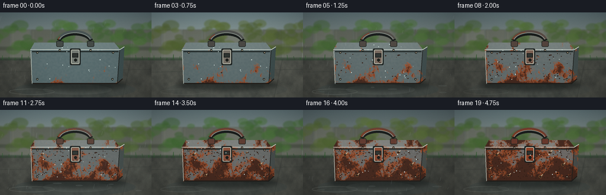
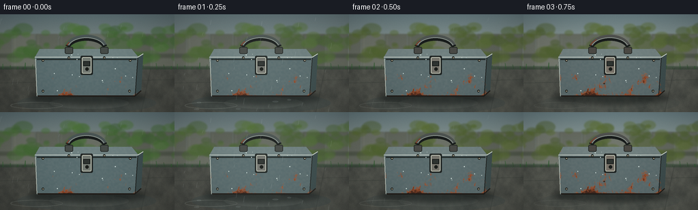
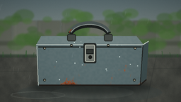
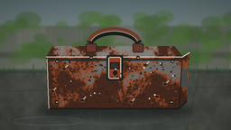

CODING AGENTS AS PIXEL WORLD MODELS
traex/GPT-5.6-Sol · material_0049
点击播放 · 原生 RGB 像素
逐轮保存的候选
回放视频、检查图与代码变化。
每份候选均可单独播放。实际图片检查记录在下方工具轨迹中。
候选 01播放与检查图
点击播放 · 原生 RGB 像素


展开代码变化
--- 上一保存版本
+++ 本次保存版本
@@ -0,0 +1,268 @@
+import os
+import math
+import numpy as np
+from PIL import Image, ImageDraw, ImageFilter
+import artifact_io
+
+# Deterministic procedural timelapse; no external assets.
+W, H, N = 256, 144, 20
+S = 3
+WW, HH = W*S, H*S
+rng = np.random.default_rng(490049)
+
+def up_pts(pts):
+ return [(int(x*S), int(y*S)) for x, y in pts]
+
+def smooth_noise(seed, grid_w, grid_h, blur=0.0):
+ r = np.random.default_rng(seed)
+ a = (r.random((grid_h, grid_w))*255).astype(np.uint8)
+ im = Image.fromarray(a, 'L').resize((WW, HH), Image.Resampling.BICUBIC)
+ if blur:
+ im = im.filter(ImageFilter.GaussianBlur(blur*S))
+ return np.asarray(im, dtype=np.float32)/255.0
+
+# Stable materials and corrosion maps, so damage grows rather than flickers.
+n_coarse = smooth_noise(101, 12, 7, 1.8)
+n_mid = smooth_noise(102, 32, 18, .45)
+n_fine = smooth_noise(103, 110, 62, .12)
+n_grain = smooth_noise(104, 240, 135, 0)
+YY, XX = np.mgrid[0:HH, 0:WW]
+x = XX/S; y = YY/S
+
+# Wet concrete material.
+ground_tex = .50*smooth_noise(201, 18, 8, 1.0) + .34*smooth_noise(202, 64, 28, .25) + .16*n_grain
+
+# Corrosion likelihood: clustered noise, vulnerable lower lip/edges/latch, and long drips.
+rust_score = .45*n_coarse + .28*n_mid + .15*n_fine + .12*n_grain
+edge = np.maximum.reduce([
+ np.exp(-np.abs(x-54)/4.0), np.exp(-np.abs(x-199)/4.5),
+ np.exp(-np.abs(y-65)/3.5), np.exp(-np.abs(y-119)/4.0)
+])
+lower = np.clip((y-80)/45, 0, 1)
+latch_cluster = np.exp(-(((x-127)/17)**2 + ((y-84)/14)**2))
+corner1 = np.exp(-(((x-61)/11)**2 + ((y-111)/9)**2))
+corner2 = np.exp(-(((x-188)/14)**2 + ((y-105)/11)**2))
+# narrow streaks begin at lid seam and run downward
+streaks = (0.5+0.5*np.sin(x*.77 + n_mid*5.5))**7 * np.clip((y-62)/42,0,1)*np.clip((122-y)/12,0,1)
+rust_score = np.clip(rust_score + .16*edge + .14*lower + .20*latch_cluster + .14*corner1 + .13*corner2 + .10*streaks, 0, 1.25)
+
+# Persistent tiny pitting coordinates, concentrated on box.
+pit_rng = np.random.default_rng(1117)
+pits = [(float(pit_rng.uniform(56,198)), float(pit_rng.uniform(68,117)), float(pit_rng.uniform(.35,1.25)), float(pit_rng.random())) for _ in range(230)]
+
+# Backdrop foliage blobs are persistent but gently shift in the timelapse.
+fol_rng = np.random.default_rng(88)
+foliage = []
+for _ in range(85):
+ foliage.append((fol_rng.uniform(-10,266), fol_rng.uniform(18,69), fol_rng.uniform(4,15), fol_rng.uniform(.2,1), fol_rng.uniform(0,6.28)))
+
+
+def poly_mask(points):
+ m = Image.new('L', (WW, HH), 0)
+ ImageDraw.Draw(m).polygon(up_pts(points), fill=255)
+ return np.asarray(m, dtype=np.float32)/255.0
+
+front_m = poly_mask([(51,63),(202,63),(198,121),(54,121)])
+top_m = poly_mask([(58,51),(193,51),(203,63),(51,63)])
+side_m = poly_mask([(202,63),(210,58),(207,112),(198,121)])
+
+
+def blend_region(arr, mask, color):
+ a = mask[...,None]
+ arr[:] = arr*(1-a) + np.asarray(color, dtype=np.float32)*a
+
+
+def render_frame(i):
+ p = i/(N-1)
+ # Multiple humid seasons pass; cumulative damage remains monotonic.
+ season = .5 + .5*math.sin(i*0.88 - 0.7)
+ wet = .5 + .5*math.sin(i*1.31 + .4)
+ light = .90 + .08*math.sin(i*.67) - .08*wet
+
+ # Misty overcast sky and distant vegetation.
+ arr = np.zeros((HH,WW,3), dtype=np.float32)
+ horizon = int(78*S)
+ sky_top = np.array([112,134,139], dtype=float)*light
+ sky_bot = np.array([173,181,170], dtype=float)*light
+ for yy in range(horizon):
+ q = yy/max(1,horizon-1)
+ arr[yy,:, :] = sky_top*(1-q) + sky_bot*q
+ arr[horizon:,:,:] = np.array([81,84,74], dtype=float)*light
+ im = Image.fromarray(np.clip(arr,0,255).astype(np.uint8),'RGB')
+ d = ImageDraw.Draw(im, 'RGBA')
+
+ # Soft old timber fence behind the toolbox.
+ for k in range(9):
+ x0 = (k*34-16)*S
+ fc = int(105 + 9*math.sin(k*1.8) - 12*wet)
+ d.rectangle((x0,29*S,x0+33*S,80*S), fill=(fc,fc+4,fc-7,225), outline=(74,78,68,95), width=S)
+ d.line((x0+4*S,31*S,x0+4*S,78*S), fill=(180,184,166,35), width=S)
+ d.rectangle((0,58*S,WW,64*S), fill=(63,71,57,135))
+
+ # Out-of-focus leaves; seasonal color change sells passage of years.
+ for j,(cx,cy,r,v,ph) in enumerate(foliage):
+ sway = math.sin(i*.48 + ph)*1.5
+ green = np.array([52+25*v, 87+36*v, 47+13*v])
+ autumn = np.array([99+34*v, 82+17*v, 40+7*v])
+ c = green*(1-season*.35) + autumn*(season*.35)
+ d.ellipse(((cx+sway-r)*S,(cy-r*.62)*S,(cx+sway+r)*S,(cy+r*.62)*S), fill=tuple(map(int,c))+(125,))
+ im = im.filter(ImageFilter.GaussianBlur(1.05*S))
+ arr = np.asarray(im,dtype=np.float32)
+
+ # Damp concrete foreground with puddled low-frequency variation.
+ gbase = np.stack([70+31*ground_tex, 73+30*ground_tex, 68+26*ground_tex],axis=2)*light
+ arr[horizon:] = gbase[horizon:]
+ im = Image.fromarray(np.clip(arr,0,255).astype(np.uint8),'RGB')
+ d = ImageDraw.Draw(im,'RGBA')
+ # Concrete seams, moss line and weeds.
+ d.line(up_pts([(0,101),(256,96)]), fill=(42,49,44,95), width=S)
+ d.line(up_pts([(221,79),(207,144)]), fill=(45,49,46,90), width=S)
+ d.rectangle((0,76*S,WW,81*S), fill=(39,66,45,100))
+ for k in range(34):
+ rx = (k*43 % 269)-6
+ rh = 2 + (k*7 % 8)
+ d.line(up_pts([(rx,80),(rx+(k%3)-1,80-rh)]), fill=(45,78+(k%4)*7,44,170), width=S)
+ # broad puddles and wet reflection below box
+ d.ellipse(up_pts([(25,116),(229,145)]), fill=(61,72,71,int(45+80*wet)))
+ d.ellipse(up_pts([(73,122),(189,139)]), fill=(120,130,124,int(18+38*wet)))
+ d.ellipse(up_pts([(15,129),(92,139)]), outline=(150,157,147,int(30+55*wet)), width=S)
+ im = im.filter(ImageFilter.GaussianBlur(.22*S))
+
+ # Contact shadow under the heavy box.
+ shadow = Image.new('RGBA',(WW,HH),(0,0,0,0)); sd=ImageDraw.Draw(shadow)
+ sd.ellipse(up_pts([(43,112),(215,132)]), fill=(15,20,19,135))
+ shadow=shadow.filter(ImageFilter.GaussianBlur(4*S)); im=Image.alpha_composite(im.convert('RGBA'),shadow).convert('RGB')
+ arr=np.asarray(im,dtype=np.float32).copy()
+
+ # Metal base colors, textured with horizontal brushing.
+ brush = 7*(n_fine-.5) + 4*np.sin(y*6.2)
+ fade = p*18
+ front_col = np.zeros_like(arr)
+ front_col[:,:,0] = 91 + brush + fade*1.1
+ front_col[:,:,1] = 110 + brush*.75 - fade*.15
+ front_col[:,:,2] = 112 + brush*.65 - fade*.45
+ top_col = np.zeros_like(arr)
+ top_col[:,:,0] = 113 + brush*.8 + fade
+ top_col[:,:,1] = 131 + brush*.6 - fade*.1
+ top_col[:,:,2] = 131 + brush*.5 - fade*.35
+ side_col=np.zeros_like(arr); side_col[:]=[61+fade*.7,77,78-fade*.2]
+ for m,c in [(front_m,front_col),(top_m,top_col),(side_m,side_col)]:
+ arr[:] = arr*(1-m[...,None]) + c*m[...,None]
+
+ # Stable corrosion expands continuously by lowering the score threshold.
+ threshold = .91 - .49*(p**.82)
+ rust_a = np.clip((rust_score-threshold)*8.5,0,1)
+ rust_a = rust_a*front_m
+ # top and side corrode too, but less quickly
+ top_a=np.clip((rust_score-(threshold+.055))*8,0,1)*top_m
+ side_a=np.clip((rust_score-(threshold-.025))*8,0,1)*side_m
+ all_rust=np.maximum.reduce([rust_a,top_a,side_a])
+ # mottled layered rust: umber depths, orange fresh bloom, pale oxidation edge.
+ rtex=.50*n_mid+.50*n_fine
+ rust_rgb=np.empty_like(arr)
+ rust_rgb[:,:,0]=112+65*rtex+18*n_grain
+ rust_rgb[:,:,1]=48+39*rtex
+ rust_rgb[:,:,2]=22+19*rtex
+ deep=np.clip((rust_score-threshold-.10)*8,0,1)*all_rust
+ rust_rgb=rust_rgb*(1-deep[...,None])+np.array([66,35,24])*deep[...,None]
+ arr=arr*(1-(.91*all_rust)[...,None])+rust_rgb*(.91*all_rust)[...,None]
+ im=Image.fromarray(np.clip(arr,0,255).astype(np.uint8),'RGB').convert('RGBA')
+ d=ImageDraw.Draw(im,'RGBA')
+
+ # Toolbox construction lines, seams and raised rim remain legible.
+ d.line(up_pts([(51,63),(202,63),(210,58)]), fill=(211,219,210,120), width=S)
+ d.line(up_pts([(54,66),(200,66)]), fill=(35,43,42,170), width=2*S)
+ d.line(up_pts([(55,120),(198,120),(207,112)]), fill=(35,31,27,210), width=2*S)
+ d.line(up_pts([(52,65),(54,120)]), fill=(190,198,187,90), width=S)
+ d.line(up_pts([(202,64),(198,121)]), fill=(29,31,29,150), width=S)
+
+ # Hinged handle, increasingly rusty but structurally consistent.
+ hc=(76+int(35*p),87-int(26*p),86-int(38*p),255)
+ # handle shadow then body
+ d.arc((95*S,32*S,158*S,71*S), 196,344, fill=(25,29,28,180), width=7*S)
+ d.arc((96*S,30*S,157*S,69*S), 196,344, fill=hc, width=5*S)
+ d.arc((99*S,34*S,154*S,66*S), 198,342, fill=(151,161,154,95), width=S)
+ d.rounded_rectangle((95*S,48*S,107*S,58*S),radius=2*S,fill=(70+int(35*p),76-int(20*p),72-int(28*p),255),outline=(35,39,36,220),width=S)
+ d.rounded_rectangle((147*S,48*S,159*S,58*S),radius=2*S,fill=(70+int(35*p),76-int(20*p),72-int(28*p),255),outline=(35,39,36,220),width=S)
+ # rust flecks on handle emerge
+ for k in range(int(3+20*p)):
+ ang=3.47+(k/22)*2.18
+ hx=126+29*math.cos(ang); hy=51+18*math.sin(ang)
+ d.ellipse(((hx-.7)*S,(hy-.7)*S,(hx+.7)*S,(hy+.7)*S),fill=(139,64,30,170))
+
+ # Central clasp: first dull silver, later heavily oxidized.
+ lc=(115+int(25*p),121-int(57*p),114-int(75*p),255)
+ d.rounded_rectangle((118*S,61*S,136*S,89*S),radius=2*S,fill=(39,44,42,130),outline=(25,29,28,220),width=S)
+ d.rounded_rectangle((120*S,63*S,134*S,87*S),radius=2*S,fill=lc,outline=(202,205,189,75),width=S)
+ d.rectangle((122*S,69*S,132*S,76*S),fill=(47,52,49,180),outline=(21,25,24,210),width=S)
+ d.ellipse((125*S,78*S,130*S,83*S),fill=(27,30,27,220))
+
+ # Exposed screws and hinge points.
+ for sx,sy in [(63,68),(191,68),(63,113),(190,113),(101,64),(153,64)]:
+ rr=1.8
+ d.ellipse(((sx-rr)*S,(sy-rr)*S,(sx+rr)*S,(sy+rr)*S),fill=(54+int(55*p),58-int(18*p),54-int(27*p),230),outline=(25,27,24,200),width=S)
+ d.line(up_pts([(sx-1,sy),(sx+1,sy)]),fill=(200,194,166,90),width=S)
+
+ # Fine pitting appears progressively, in exactly persistent positions.
+ for px,py,pr,birth in pits:
+ if p > .14 + .72*birth:
+ alpha=int(80+125*min(1,(p-birth*.72)/.3))
+ d.ellipse(((px-pr)*S,(py-pr*.65)*S,(px+pr)*S,(py+pr*.65)*S), fill=(48,31,24,alpha))
+ if pr>.9:
+ d.point((int((px-.25)*S),int((py-.2)*S)), fill=(225,125,60,120))
+
+ # Late peeling flakes and a pinhole show severe multi-year corrosion.
+ flakes=[(71,76,0.43),(183,93,.52),(91,111,.60),(161,72,.68),(58,101,.74),(145,113,.79)]
+ for fx,fy,birth in flakes:
+ if p>birth:
+ q=min(1,(p-birth)/.18)
+ pts=[(fx-3*q,fy-1.5*q),(fx+3.2*q,fy-2*q),(fx+1.5*q,fy+2.4*q),(fx-2*q,fy+1.5*q)]
+ d.polygon(up_pts(pts),fill=(50,38,30,int(190*q)),outline=(202,121,61,int(210*q)))
+ d.line(up_pts([(fx+1.5*q,fy-1.3*q),(fx+4*q,fy-3.8*q)]),fill=(205,187,150,int(160*q)),width=S)
+ if p>.78:
+ q=(p-.78)/.22
+ d.ellipse(((174-2.8*q)*S,(107-2*q)*S,(174+2.8*q)*S,(107+2*q)*S),fill=(19,21,19,int(230*q)),outline=(177,74,31,int(240*q)),width=S)
+
+ # Damp beads collect on lid/front. Persistent locations, varying visibility.
+ bead_rng=np.random.default_rng(501+i//4)
+ for k in range(22):
+ bx=bead_rng.uniform(61,195); by=bead_rng.uniform(54,115)
+ if by>65 and bead_rng.random()<.35: continue
+ rad=bead_rng.uniform(.25,.72)
+ d.ellipse(((bx-rad)*S,(by-rad)*S,(bx+rad)*S,(by+rad)*S),fill=(210,225,220,int(40+75*wet)))
+
+ # Rain in humid spells; streak locations change as expected in timelapse.
+ rain_layer=Image.new('RGBA',(WW,HH),(0,0,0,0)); rd=ImageDraw.Draw(rain_layer,'RGBA')
+ rain_amt=max(0, wet-.45)
+ rrng=np.random.default_rng(900+i)
+ for _ in range(int(55*rain_amt)):
+ rx=rrng.uniform(0,260); ry=rrng.uniform(0,139); ln=rrng.uniform(3,9)
+ rd.line(up_pts([(rx,ry),(rx-1.3,ry+ln)]),fill=(210,225,225,int(35+75*rain_amt)),width=max(1,S//2))
+ if rain_amt>.25:
+ for _ in range(5):
+ rx=rrng.uniform(15,240); ry=rrng.uniform(123,143); rw=rrng.uniform(2,8)
+ rd.ellipse(up_pts([(rx-rw,ry-1),(rx+rw,ry+1)]),outline=(195,211,209,int(70*rain_amt)),width=S)
+ im=Image.alpha_composite(im,rain_layer)
+
+ # Humid bloom, vignette, subtle sensor grain.
+ if wet>.72:
+ haze=Image.new('RGBA',(WW,HH),(206,217,211,int((wet-.72)*34)))
+ im=Image.alpha_composite(im,haze)
+ arr=np.asarray(im.convert('RGB'),dtype=np.float32)
+ # restrained moving grain, plus fixed darkened corners
+ gr=np.random.default_rng(1300+i).normal(0,1.15,(HH,WW,1))
+ dx=(x-128)/150; dy=(y-72)/96
+ vig=np.clip(1-.18*(dx*dx+dy*dy),.78,1)[...,None]
+ arr=arr*vig+gr
+ out=Image.fromarray(np.clip(arr,0,255).astype(np.uint8),'RGB').resize((W,H),Image.Resampling.LANCZOS)
+ return np.asarray(out,dtype=np.uint8)
+
+
+def main():
+ frames=np.stack([render_frame(i) for i in range(N)],axis=0)
+ # Contract requires artifact_io.save(frames, case_dir).
+ case_dir=os.path.dirname(os.path.abspath(__file__))
+ artifact_io.save(frames, case_dir)
+
+if __name__ == '__main__':
+ main()
可观测工具轨迹
实际执行的命令与返回图片。
命令 1exit 0
/bin/bash -lc "cat prompt.txt && printf '\\n--- GENERATION_RULES ---\\n' && cat GENERATION_RULES.md"
命令 2exit 0
/bin/bash -lc "cat task_spec.json && printf '\\n--- FILES ---\\n' && find . -maxdepth 2 -type f -printf '%p\\n' | sort"
命令 3exit 0
/bin/bash -lc "cat > generate.py <<'PY'
import os
import math
import numpy as np
from PIL import Image, ImageDraw, ImageFilter
import artifact_io
# Deterministic procedural timelapse; no external assets.
W, H, N = 256, 144, 20
S = 3
WW, HH = W*S, H*S
rng = np.random.default_rng(490049)
def up_pts(pts):
return [(int(x*S), int(y*S)) for x, y in pts]
def smooth_noise(seed, grid_w, grid_h, blur=0.0):
r = np.random.default_rng(seed)
a = (r.random((grid_h, grid_w))*255).astype(np.uint8)
im = Image.fromarray(a, 'L').resize((WW, HH), Image.Resampling.BICUBIC)
if blur:
im = im.filter(ImageFilter.GaussianBlur(blur*S))
return np.asarray(im, dtype=np.float32)/255.0
# Stable materials and corrosion maps, so damage grows rather than flickers.
n_coarse = smooth_noise(101, 12, 7, 1.8)
n_mid = smooth_noise(102, 32, 18, .45)
n_fine = smooth_noise(103, 110, 62, .12)
n_grain = smooth_noise(104, 240, 135, 0)
YY, XX = np.mgrid[0:HH, 0:WW]
x = XX/S; y = YY/S
# Wet concrete material.
ground_tex = .50*smooth_noise(201, 18, 8, 1.0) + .34*smooth_noise(202, 64, 28, .25) + .16*n_grain
# Corrosion likelihood: clustered noise, vulnerable lower lip/edges/latch, and long drips.
rust_score = .45*n_coarse + .28*n_mid + .15*n_fine + .12*n_grain
edge = np.maximum.reduce([
np.exp(-np.abs(x-54)/4.0), np.exp(-np.abs(x-199)/4.5),
np.exp(-np.abs(y-65)/3.5), np.exp(-np.abs(y-119)/4.0)
])
lower = np.clip((y-80)/45, 0, 1)
latch_cluster = np.exp(-(((x-127)/17)**2 + ((y-84)/14)**2))
corner1 = np.exp(-(((x-61)/11)**2 + ((y-111)/9)**2))
corner2 = np.exp(-(((x-188)/14)**2 + ((y-105)/11)**2))
# narrow streaks begin at lid seam and run downward
streaks = (0.5+0.5*np.sin(x*.77 + n_mid*5.5))**7 * np.clip((y-62)/42,0,1)*np.clip((122-y)/12,0,1)
rust_score = np.clip(rust_score + .16*edge + .14*lower + .20*latch_cluster + .14*corner1 + .13*corner2 + .10*streaks, 0, 1.25)
# Persistent tiny pitting coordinates, concentrated on box.
pit_rng = np.random.default_rng(1117)
pits = [(float(pit_rng.uniform(56,198)), float(pit_rng.uniform(68,117)), float(pit_rng.uniform(.35,1.25)), float(pit_rng.random())) for _ in range(230)]
# Backdrop foliage blobs are persistent but gently shift in the timelapse.
fol_rng = np.random.default_rng(88)
foliage = []
for _ in range(85):
foliage.append((fol_rng.uniform(-10,266), fol_rng.uniform(18,69), fol_rng.uniform(4,15), fol_rng.uniform(.2,1), fol_rng.uniform(0,6.28)))
def poly_mask(points):
m = Image.new('L', (WW, HH), 0)
ImageDraw.Draw(m).polygon(up_pts(points), fill=255)
return np.asarray(m, dtype=np.float32)/255.0
front_m = poly_mask([(51,63),(202,63),(198,121),(54,121)])
top_m = poly_mask([(58,51),(193,51),(203,63),(51,63)])
side_m = poly_mask([(202,63),(210,58),(207,112),(198,121)])
def blend_region(arr, mask, color):
a = mask[...,None]
arr[:] = arr*(1-a) + np.asarray(color, dtype=np.float32)*a
def render_frame(i):
p = i/(N-1)
# Multiple humid seasons pass; cumulative damage remains monotonic.
season = .5 + .5*math.sin(i*0.88 - 0.7)
wet = .5 + .5*math.sin(i*1.31 + .4)
light = .90 + .08*math.sin(i*.67) - .08*wet
# Misty overcast sky and distant vegetation.
arr = np.zeros((HH,WW,3), dtype=np.float32)
horizon = int(78*S)
sky_top = np.array([112,134,139], dtype=float)*light
sky_bot = np.array([173,181,170], dtype=float)*light
for yy in range(horizon):
q = yy/max(1,horizon-1)
arr[yy,:, :] = sky_top*(1-q) + sky_bot*q
arr[horizon:,:,:] = np.array([81,84,74], dtype=float)*light
im = Image.fromarray(np.clip(arr,0,255).astype(np.uint8),'RGB')
d = ImageDraw.Draw(im, 'RGBA')
# Soft old timber fence behind the toolbox.
for k in range(9):
x0 = (k*34-16)*S
fc = int(105 + 9*math.sin(k*1.8) - 12*wet)
d.rectangle((x0,29*S,x0+33*S,80*S), fill=(fc,fc+4,fc-7,225), outline=(74,78,68,95), width=S)
d.line((x0+4*S,31*S,x0+4*S,78*S), fill=(180,184,166,35), width=S)
d.rectangle((0,58*S,WW,64*S), fill=(63,71,57,135))
# Out-of-focus leaves; seasonal color change sells passage of years.
for j,(cx,cy,r,v,ph) in enumerate(foliage):
sway = math.sin(i*.48 + ph)*1.5
green = np.array([52+25*v, 87+36*v, 47+13*v])
autumn = np.array([99+34*v, 82+17*v, 40+7*v])
c = green*(1-season*.35) + autumn*(season*.35)
d.ellipse(((cx+sway-r)*S,(cy-r*.62)*S,(cx+sway+r)*S,(cy+r*.62)*S), fill=tuple(map(int,c))+(125,))
im = im.filter(ImageFilter.GaussianBlur(1.05*S))
arr = np.asarray(im,dtype=np.float32)
# Damp concrete foreground with puddled low-frequency variation.
gbase = np.stack([70+31*ground_tex, 73+30*ground_tex, 68+26*ground_tex],axis=2)*light
arr[horizon:] = gbase[horizon:]
im = Image.fromarray(np.clip(arr,0,255).astype(np.uint8),'RGB')
d = ImageDraw.Draw(im,'RGBA')
# Concrete seams, moss line and weeds.
d.line(up_pts([(0,101),(256,96)]), fill=(42,49,44,95), width=S)
d.line(up_pts([(221,79),(207,144)]), fill=(45,49,46,90), width=S)
d.rectangle((0,76*S,WW,81*S), fill=(39,66,45,100))
for k in range(34):
rx = (k*43 % 269)-6
rh = 2 + (k*7 % 8)
d.line(up_pts([(rx,80),(rx+(k%3)-1,80-rh)]), fill=(45,78+(k%4)*7,44,170), width=S)
# broad puddles and wet reflection below box
d.ellipse(up_pts([(25,116),(229,145)]), fill=(61,72,71,int(45+80*wet)))
d.ellipse(up_pts([(73,122),(189,139)]), fill=(120,130,124,int(18+38*wet)))
d.ellipse(up_pts([(15,129),(92,139)]), outline=(150,157,147,int(30+55*wet)), width=S)
im = im.filter(ImageFilter.GaussianBlur(.22*S))
# Contact shadow under the heavy box.
shadow = Image.new('RGBA',(WW,HH),(0,0,0,0)); sd=ImageDraw.Draw(shadow)
sd.ellipse(up_pts([(43,112),(215,132)]), fill=(15,20,19,135))
shadow=shadow.filter(ImageFilter.GaussianBlur(4*S)); im=Image.alpha_composite(im.convert('RGBA'),shadow).convert('RGB')
arr=np.asarray(im,dtype=np.float32).copy()
# Metal base colors, textured with horizontal brushing.
brush = 7*(n_fine-.5) + 4*np.sin(y*6.2)
fade = p*18
front_col = np.zeros_like(arr)
front_col[:,:,0] = 91 + brush + fade*1.1
front_col[:,:,1] = 110 + brush*.75 - fade*.15
front_col[:,:,2] = 112 + brush*.65 - fade*.45
top_col = np.zeros_like(arr)
top_col[:,:,0] = 113 + brush*.8 + fade
top_col[:,:,1] = 131 + brush*.6 - fade*.1
top_col[:,:,2] = 131 + brush*.5 - fade*.35
side_col=np.zeros_like(arr); side_col[:]=[61+fade*.7,77,78-fade*.2]
for m,c in [(front_m,front_col),(top_m,top_col),(side_m,side_col)]:
arr[:] = arr*(1-m[...,None]) + c*m[...,None]
# Stable corrosion expands continuously by lowering the score threshold.
threshold = .91 - .49*(p**.82)
rust_a = np.clip((rust_score-threshold)*8.5,0,1)
rust_a = rust_a*front_m
# top and side corrode too, but less quickly
top_a=np.clip((rust_score-(threshold+.055))*8,0,1)*top_m
side_a=np.clip((rust_score-(threshold-.025))*8,0,1)*side_m
all_rust=np.maximum.reduce([rust_a,top_a,side_a])
# mottled layered rust: umber depths, orange fresh bloom, pale oxidation edge.
rtex=.50*n_mid+.50*n_fine
rust_rgb=np.empty_like(arr)
rust_rgb[:,:,0]=112+65*rtex+18*n_grain
rust_rgb[:,:,1]=48+39*rtex
rust_rgb[:,:,2]=22+19*rtex
deep=np.clip((rust_score-threshold-.10)*8,0,1)*all_rust
rust_rgb=rust_rgb*(1-deep[...,None])+np.array([66,35,24])*deep[...,None]
arr=arr*(1-(.91*all_rust)[...,None])+rust_rgb*(.91*all_rust)[...,None]
im=Image.fromarray(np.clip(arr,0,255).astype(np.uint8),'RGB').convert('RGBA')
d=ImageDraw.Draw(im,'RGBA')
# Toolbox construction lines, seams and raised rim remain legible.
d.line(up_pts([(51,63),(202,63),(210,58)]), fill=(211,219,210,120), width=S)
d.line(up_pts([(54,66),(200,66)]), fill=(35,43,42,170), width=2*S)
d.line(up_pts([(55,120),(198,120),(207,112)]), fill=(35,31,27,210), width=2*S)
d.line(up_pts([(52,65),(54,120)]), fill=(190,198,187,90), width=S)
d.line(up_pts([(202,64),(198,121)]), fill=(29,31,29,150), width=S)
# Hinged handle, increasingly rusty but structurally consistent.
hc=(76+int(35*p),87-int(26*p),86-int(38*p),255)
# handle shadow then body
d.arc((95*S,32*S,158*S,71*S), 196,344, fill=(25,29,28,180), width=7*S)
d.arc((96*S,30*S,157*S,69*S), 196,344, fill=hc, width=5*S)
d.arc((99*S,34*S,154*S,66*S), 198,342, fill=(151,161,154,95), width=S)
d.rounded_rectangle((95*S,48*S,107*S,58*S),radius=2*S,fill=(70+int(35*p),76-int(20*p),72-int(28*p),255),outline=(35,39,36,220),width=S)
d.rounded_rectangle((147*S,48*S,159*S,58*S),radius=2*S,fill=(70+int(35*p),76-int(20*p),72-int(28*p),255),outline=(35,39,36,220),width=S)
# rust flecks on handle emerge
for k in range(int(3+20*p)):
ang=3.47+(k/22)*2.18
hx=126+29*math.cos(ang); hy=51+18*math.sin(ang)
d.ellipse(((hx-.7)*S,(hy-.7)*S,(hx+.7)*S,(hy+.7)*S),fill=(139,64,30,170))
# Central clasp: first dull silver, later heavily oxidized.
lc=(115+int(25*p),121-int(57*p),114-int(75*p),255)
d.rounded_rectangle((118*S,61*S,136*S,89*S),radius=2*S,fill=(39,44,42,130),outline=(25,29,28,220),width=S)
d.rounded_rectangle((120*S,63*S,134*S,87*S),radius=2*S,fill=lc,outline=(202,205,189,75),width=S)
d.rectangle((122*S,69*S,132*S,76*S),fill=(47,52,49,180),outline=(21,25,24,210),width=S)
d.ellipse((125*S,78*S,130*S,83*S),fill=(27,30,27,220))
# Exposed screws and hinge points.
for sx,sy in [(63,68),(191,68),(63,113),(190,113),(101,64),(153,64)]:
rr=1.8
d.ellipse(((sx-rr)*S,(sy-rr)*S,(sx+rr)*S,(sy+rr)*S),fill=(54+int(55*p),58-int(18*p),54-int(27*p),230),outline=(25,27,24,200),width=S)
d.line(up_pts([(sx-1,sy),(sx+1,sy)]),fill=(200,194,166,90),width=S)
# Fine pitting appears progressively, in exactly persistent positions.
for px,py,pr,birth in pits:
if p > .14 + .72*birth:
alpha=int(80+125*min(1,(p-birth*.72)/.3))
d.ellipse(((px-pr)*S,(py-pr*.65)*S,(px+pr)*S,(py+pr*.65)*S), fill=(48,31,24,alpha))
if pr>.9:
d.point((int((px-.25)*S),int((py-.2)*S)), fill=(225,125,60,120))
# Late peeling flakes and a pinhole show severe multi-year corrosion.
flakes=[(71,76,0.43),(183,93,.52),(91,111,.60),(161,72,.68),(58,101,.74),(145,113,.79)]
for fx,fy,birth in flakes:
if p>birth:
q=min(1,(p-birth)/.18)
pts=[(fx-3*q,fy-1.5*q),(fx+3.2*q,fy-2*q),(fx+1.5*q,fy+2.4*q),(fx-2*q,fy+1.5*q)]
d.polygon(up_pts(pts),fill=(50,38,30,int(190*q)),outline=(202,121,61,int(210*q)))
d.line(up_pts([(fx+1.5*q,fy-1.3*q),(fx+4*q,fy-3.8*q)]),fill=(205,187,150,int(160*q)),width=S)
if p>.78:
q=(p-.78)/.22
d.ellipse(((174-2.8*q)*S,(107-2*q)*S,(174+2.8*q)*S,(107+2*q)*S),fill=(19,21,19,int(230*q)),outline=(177,74,31,int(240*q)),width=S)
# Damp beads collect on lid/front. Persistent locations, varying visibility.
bead_rng=np.random.default_rng(501+i//4)
for k in range(22):
bx=bead_rng.uniform(61,195); by=bead_rng.uniform(54,115)
if by>65 and bead_rng.random()<.35: continue
rad=bead_rng.uniform(.25,.72)
d.ellipse(((bx-rad)*S,(by-rad)*S,(bx+rad)*S,(by+rad)*S),fill=(210,225,220,int(40+75*wet)))
# Rain in humid spells; streak locations change as expected in timelapse.
rain_layer=Image.new('RGBA',(WW,HH),(0,0,0,0)); rd=ImageDraw.Draw(rain_layer,'RGBA')
rain_amt=max(0, wet-.45)
rrng=np.random.default_rng(900+i)
for _ in range(int(55*rain_amt)):
rx=rrng.uniform(0,260); ry=rrng.uniform(0,139); ln=rrng.uniform(3,9)
rd.line(up_pts([(rx,ry),(rx-1.3,ry+ln)]),fill=(210,225,225,int(35+75*rain_amt)),width=max(1,S//2))
if rain_amt>.25:
for _ in range(5):
rx=rrng.uniform(15,240); ry=rrng.uniform(123,143); rw=rrng.uniform(2,8)
rd.ellipse(up_pts([(rx-rw,ry-1),(rx+rw,ry+1)]),outline=(195,211,209,int(70*rain_amt)),width=S)
im=Image.alpha_composite(im,rain_layer)
# Humid bloom, vignette, subtle sensor grain.
if wet>.72:
haze=Image.new('RGBA',(WW,HH),(206,217,211,int((wet-.72)*34)))
im=Image.alpha_composite(im,haze)
arr=np.asarray(im.convert('RGB'),dtype=np.float32)
# restrained moving grain, plus fixed darkened corners
gr=np.random.default_rng(1300+i).normal(0,1.15,(HH,WW,1))
dx=(x-128)/150; dy=(y-72)/96
vig=np.clip(1-.18*(dx*dx+dy*dy),.78,1)[...,None]
arr=arr*vig+gr
out=Image.fromarray(np.clip(arr,0,255).astype(np.uint8),'RGB').resize((W,H),Image.Resampling.LANCZOS)
return np.asarray(out,dtype=np.uint8)
def main():
frames=np.stack([render_frame(i) for i in range(N)],axis=0)
# Contract requires artifact_io.save(frames, case_dir).
case_dir=os.path.dirname(os.path.abspath(__file__))
artifact_io.save(frames, case_dir)
if __name__ == '__main__':
main()
PY
python generate.py
printf '\\n--- GENERATED ---\\n'
find . -maxdepth 2 -type f -printf '%p %s bytes\\n' | sort"命令 4exit 0
/bin/bash -lc "python - <<'PY'
import numpy as np
from PIL import Image
z=np.load('pixels.npz'); print('npz keys:',z.files)
for k in z.files: print(k,z[k].shape,z[k].dtype,z[k].min(),z[k].max())
for f in ['frames/00.png','frames/19.png']:
im=Image.open(f); print(f,im.mode,im.size)
PY"视觉工具实际返回图片 1

视觉工具实际返回图片 2

视觉工具实际返回图片 3

保存候选 1 份；完成命令 4 次；可验证图片返回 3 张。原始 API 响应与完整日志保留在本地。